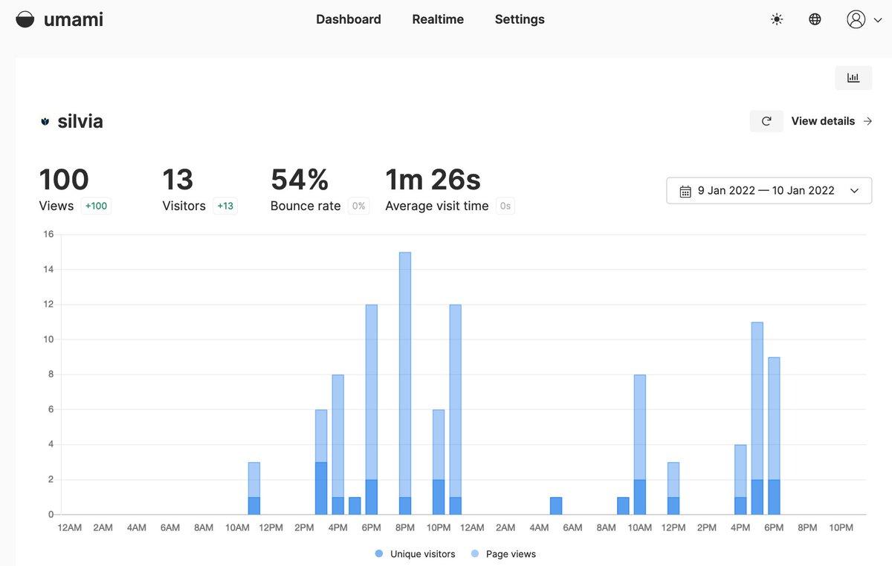

Hello Umami: Deploying a Privacy-Friendly Open Source Tool for Web Analytics
A use case for adding Umami web analytics to a blogdown site and deploying using Railway.
By Silvia Canelón in R Website
January 18, 2022
What to expect
A brief walkthrough of the steps I took to deploy Umami web analytics for my personal website, as documented in a short Twitter thread.
Months ago I removed GA from my #RStats #blogdown site & this weekend I added http://umami.is 🍚 ( @caozilla) as an open source, privacy-friendly, web analytics alternative
I was intimidated by the self-hosting aspect, but the docs + @Railway made it possible! Steps in 🧵

Installation
Steps I followed:
-
Install Railway CLI with Homebrew https://docs.railway.app/develop/cli
-
Install PostgreSQL with Homebrew https://wiki.postgresql.org/wiki/Homebrew
-
Fork Umami repo & follow steps in “Running on Railway from a forked repository” at https://umami.is/docs/running-on-railway
-
Clone repo locally w git
Railway
5. Link local setup to Railway project in the terminal w/ railway link <projectid>. Project ID is in the Railway dashboard under
Setup
- Create PostgreSQL tables using
railway runin local umami directory + steps in “Create database tables” at https://umami.is/docs/running-on-railway
7. Deploy with railway up! 🚄
-
Follow steps in Umami Getting Started docs https://umami.is/docs/login to login & add website
-
Add tracking code to website. In my #HugoApero #blogdown site I added it to layouts/partials/head.html. My example at https://github.com/spcanelon/silvia/blob/main/layouts/partials/head.html#L21-L29
Tracker Configuration
10. In order to not track my own visits to my site, I followed the tip in @DeepankarBhade’s post https://dpnkr.in/blog/self-host-umami and disabled Umami from my browser’s local storage. He kindly explained the steps to me in this thread 😅 https://twitter.com/DeepankarBhade/status/1480214508987551750?s=20
Pricing
A note about Railway pricing https://docs.railway.app/reference/limits:
I’m using the free tier, the Starter Plan, which has $5 of credits. In the past 2 days I’ve used $0.7258 of my credits & it’s estimated I’ll use $3.04 by the end of the month. My site receives relatively low traffic, so YMMV
There is a free-ish $10 credit Railway plan available also, where you would only get billed for any usage above $10
For a fully free & more adventurous experience you could give up the convenience of Railway & self-host! See the Umami docs for options https://umami.is/docs/hosting
GoatCounter
I’ll leave you with another great free, open source, privacy-friendly option, which is GoatCounter 🐐 https://www.goatcounter.com/. And @mattdray wrote a blogdown post about it! https://twitter.com/mattdray/status/1306353556706992128?s=20
For more convos about GA web analytics alternatives, see https://twitter.com/ma_salmon/status/1379363183526285312?s=20
Updating Umami
Note to self – how to update http://umami.is with new releases:
Recent update to v1.25.0 https://github.com/mikecao/umami/releases/tag/v1.25.0
- Fetch upstream from my umami fork
- Locally in terminal, change to my umami directory
- git pull, npm install, railway up 🚄